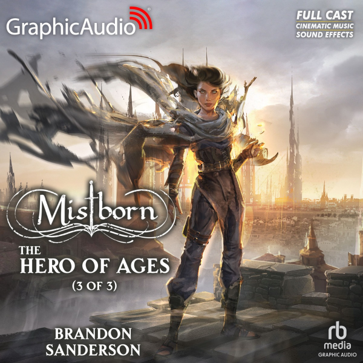
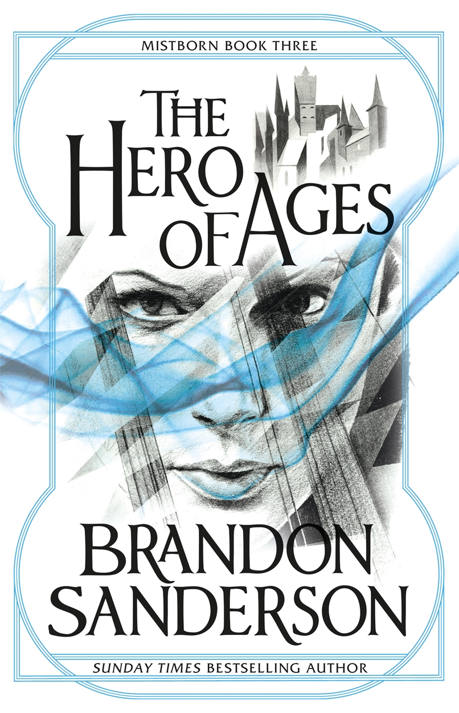

Gallery




As ash falls thicker and the mists grow stronger, the world races toward destruction. Vin and Elend struggle to hold their fractured empire together while uncovering the final secrets left behind by the Lord Ruler. Ancient prophecies, shifting alliances, and the true nature of Ruin and Preservation collide in a desperate fight for survival.
"A powerful and emotional conclusion to one of fantasy's most inventive trilogies." - Me
"Sanderson delivers a masterclass in worldbuilding, tension, and payoff." - Yours Truly
